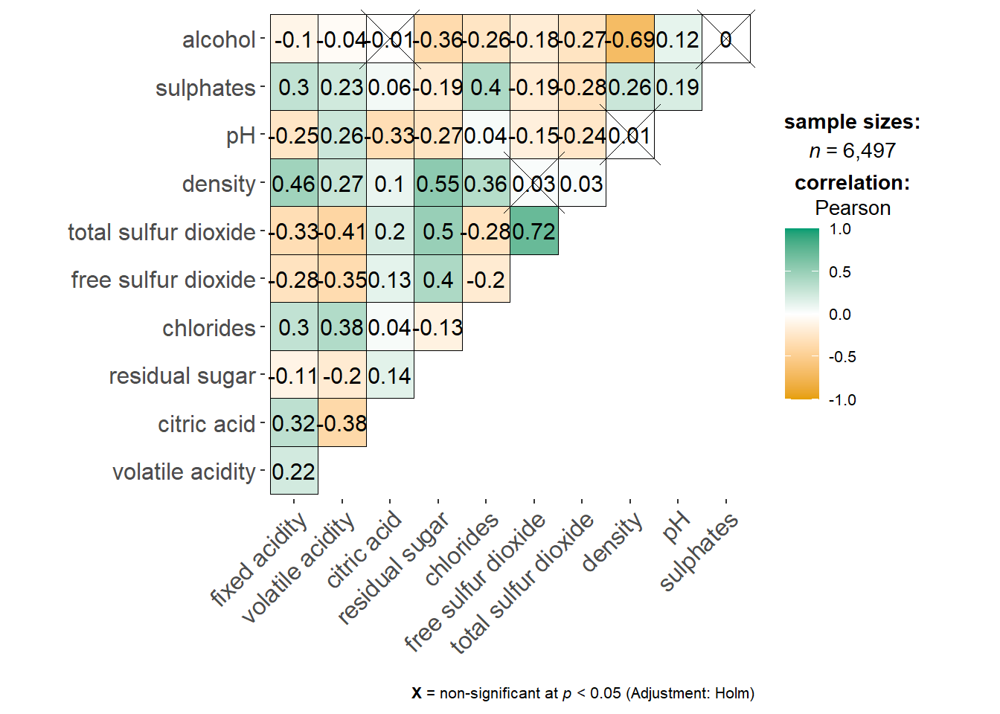
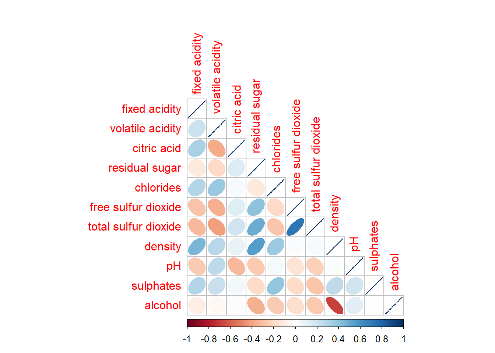
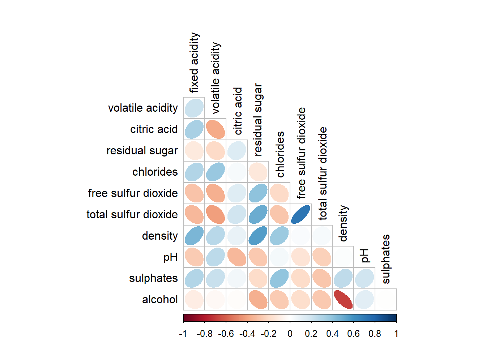

pacman::p_load(corrplot, ggstatsplot, tidyverse)Hands on Exercise 05a: Visual Correlation Analysis
Overview
The correlation coefficient is a popular statistic that use to measure the type and strength of the relationship between two variables. The values of a correlation coefficient ranges between -1.0 and 1.0. A correlation coefficient of 1 shows a perfect linear relationship between the two variables, while a -1.0 shows a perfect inverse relationship between the two variables. A correlation coefficient of 0.0 shows no linear relationship between the two variables.
When multivariate data are used, the correlation coefficeints of the pair comparisons are displayed in a table form known as correlation matrix or scatterplot matrix.
There are three broad reasons for computing the correlation matrix for a dataset:
- To reveal the relationship between high-dimensional variables in a pair-wise manner;
- To input into other analyses. For example, people commonly use correlation matrices as inputs for exploratory factor analysis, confirmatory factor analysis, structural equation models, and linear regression when excluding missing values pairwise.
- As a diagnostic when checking other analyses. For example, with linear regression a high amount of correlations suggests that the linear regression’s estimates will be unreliable.
When the data is large, both in terms of the number of observations and the number of variables, Corrgram tends to be used to visually explore and analyse the structure and the patterns of relations among variables. It is designed based on two main schemes:
- Rendering the value of a correlation to depict its sign and magnitude, and
- Reordering the variables in a correlation matrix so that “similar” variables are positioned adjacently, facilitating perception.
In this exercise, we will learn how to perform data visualisations for correlation matrices. We will proceed in 3 sections:
- Create correlation matrices using pairs() of R Graphics
- Plot corrgrams using the corrplot package in R
- Create an interactive correlation matrix using plotly R
Loading Data
We will be using the following R packages:
- corrplot package that provides a visual exploratory tool on correlation matrix that supports automatic variable reordering to help detect hidden patterns among variables;
- ggstatsplot package to create visual graphics with rich statistical information;
- tidyverse, a family of R packages for data science processes.
We will use the Wine Quality Dataset of UCI Machine Learning Repository, which consists of 13 variables and 6497 observations. The dataset already combines red wine and white wine data into one csv file.
wine <- read_csv("data/wine_quality.csv")We note that besides quality, type, free sulfur dioxide, and total sulfur dioxide columns, the rest of the features are continuous numerical data.
Building Correlation Matrix: pairs() method
There is more than one way to build scatterplot matrices with R. In this section, we will create a scatterplot matrix by using the pairs function of R Graphics.
Building a basic correlation matrix
The figure below shows the scatter plot matrix of Wine Quality Data as an 12 by 12 matrix.
pairs(wine[,1:12])The input of pairs() can be a matrix or data frame. The code chunk used to create the scatterplot matrix is relatively simple and uses the default pairs function. Columns 1 to 12 of wine dataframe are used to build the scatterplot matrix. The variables are: fixed acidity, volatile acidity, citric acid, residual sugar, chlorides, free sulfur dioxide, total sulfur dioxide, density, pH, sulphates, alcohol, and quality.
We notice that quality column is the label, so we will use the features in columns 1 to 11 only.
Drawing only the lower triangle
pairs function of R Graphics provids many customisation arguments. For example, it is a common practice to show either the upper half or lower half of the correlation matrix instead of both because a correlation matrix is symmetric. To show the lower half of the correlation matrix, the upper.panel argument will be used as shown in the code chunk below.
pairs(wine[,1:11], upper.panel = NULL)Similarly, you can display the upper half of the correlation matrix by using the lower.panel argument.
pairs(wine[,1:11], lower.panel = NULL)Including correlation coefficients
To show the correlation coefficient of each pair of variables instead of a scatter plot, we can use the panel.cor function. This will also show higher correlations in a larger font in the upper triangle of the matrix.
panel.cor <- function(x, y, digits=2, prefix="", cex.cor, ...) {
usr <- par("usr")
on.exit(par(usr))
par(usr = c(0, 1, 0, 1))
r <- abs(cor(x, y, use="complete.obs"))
txt <- format(c(r, 0.123456789), digits=digits)[1]
txt <- paste(prefix, txt, sep="")
if(missing(cex.cor)) cex.cor <- 0.8/strwidth(txt)
text(0.5, 0.5, txt, cex = cex.cor * (1 + r) / 2)
}
pairs(wine[,1:11],
upper.panel = panel.cor)Visualising Correlation Matrix: ggcormat()
One of the major limitations of the correlation matrix is that the scatter plots appear very cluttered when the number of observations is relatively large (i.e. more than 500 observations). To overcome this problem, the Corrgram data visualisation technique suggested by D. J. Murdoch and E. D. Chow (1996) and Friendly, M (2002) and will be used.
At least three R packages provide functions to plot corrgrams, and they are:
On top that, some R packages like ggstatsplot also provide functions for building corrgrams.
In this section, we will visualise a correlation matrix using ggcorrmat() of ggstatplot package
The basic plot
One of the advantages of using ggcorrmat() over other methods to visualise a correlation matrix is it’s ability to provide a comprehensive and yet professional statistical report as shown in the figure below.
ggstatsplot::ggcorrmat(
data = wine,
cor.vars = 1:11)
Theses consist of values which are not sorted, so we improve the plot by implementing hierarchical clustering to group similar features tugether, making patterns more visible.
ggstatsplot::ggcorrmat(
data = wine,
cor.vars = 1:11,
ggcorrplot.args = list(outline.color = "black",
hc.order = TRUE,
tl.cex = 10),
title = "Correlogram for wine dataset",
subtitle = "Four pairs are no significant at p < 0.05"
)Things to learn from the code chunk above
cor.varsargument is used to compute the correlation matrix needed to build the corrgram.hc.orderargument implements hierarchical clustering to the dataggcorrplot.argsargument provides additional (mostly aesthetic) arguments that will be passed to theggcorrplot::ggcorrplotfunction. The list should avoid any of the following arguments since they are already internally being used:corr,method,p.mat,sig.level,ggtheme,colors,lab,pch,legend.title,digits.
The following sample sub-code chunk can be used to control specific component of the plot such as the font size of the x-axis, y-axis, and the statistical report.
ggplot.component = list(
theme(text=element_text(size=5),
axis.text.x = element_text(size = 8),
axis.text.y = element_text(size = 8)))Building multiple plots
Since ggstatsplot is an extension of ggplot2, it also supports faceting. However the feature is not available in ggcorrmat() but in the grouped_ggcorrmat() of ggstatsplot.
grouped_ggcorrmat(
data = wine,
cor.vars = 1:11,
grouping.var = type,
type = "robust",
p.adjust.method = "holm",
plotgrid.args = list(ncol = 2),
ggcorrplot.args = list(outline.color = "black",
hc.order = TRUE,
tl.cex = 10),
annotation.args = list(
tag_levels = "a",
title = "Correlogram for wine dataset",
subtitle = "The measures are: alcohol, sulphates, fixed acidity, citric acid, chlorides, residual sugar, density, free sulfur dioxide and volatile acidity",
caption = "Dataset: UCI Machine Learning Repository"
)
)
Things to learn from the code chunk above
- to build a facet plot, the only argument needed is
grouping.var. Here, a robust correlation method which is percentage bend correlation is used, and the p-value us adjusted for multiple comparisons using Holm’s method - Behind group_ggcorrmat(), patchwork package is used to create the multiplot.
plotgrid.argsargument provides a list of additional arguments passed to patchwork::wrap_plots, except for guides argument which is already separately specified earlier. - Similarly,
annotation.argsargument calls the plot annotation arguments of patchwork package.
Visualising Correlation Matrix using corrplot Package
We now move to the main package to be explored in this exercise, which is the corrplot package.
Getting started with corrplot
We recompute the correlation matrix of the wine data frame using this packaage and plot the corrgram using corrplot(), with setting all at default.
wine.cor <- cor(wine[, 1:11])
corrplot(wine.cor)
Notice that the default visual object used to plot the corrgram is circle. The default layout of the corrgram is a symmetric matrix. The default colour scheme is diverging blue-red. Blue colours are used to represent pair variables with positive correlation coefficients and red colours are used to represent pair variables with negative correlation coefficients. The intensity of the colours or saturation is used to represent the strength of the correlation coefficient. Darker colours and larger circles indicate relatively stronger linear relationship between the paired variables. On the other hand, lighter colours and smaller circles indicates relatively weaker linear relationship.
Working with visual geometrics
In the corrplot package, there are seven visual geometrics (a parameter method) that can be used to encode the attribute values. They are: circle, square, ellipse, number, shade, color and pie. The default is circle, but this default setting can be changed by using the method argument as shown below.
corrplot(wine.cor,
method = "pie") 
Working with layouts
corrplot() supports three layout types, namely: “full”, “upper” or “lower”. The default is “full” which displays the full matrix. The default setting can be changed by using the type argument of corrplot().
corrplot(wine.cor,
method = "ellipse",
type="lower")
We can further customise the layout by using the diag argument to turn off the diagonal cells, and the tl.col argument to change the axis text label colour to black as shown below.
corrplot(wine.cor,
method = "ellipse",
type="lower",
diag = FALSE,
tl.col = "black",
cl.cex = 0.8)
Other arguments would include tl.pos, tl.cex, tl.offset for the text labels, and cl.pos, cl.cex, cl.offset for the colour legend
Working with mixed layouts
With the corrplot package, it is possible to design corrgrams which are mixed: a visual matrix in one triangle and a numerical matrix in the other triangle. In order to create a coorgram with such mixed layout, corrplot.mixed(), a wrapped function for mixed visualisation styles will be used.
corrplot.mixed(wine.cor,
lower = "ellipse",
upper = "number",
tl.pos = "lt",
diag = "n",
tl.col = "black")
Notice that arguments lower and upper are used to define the visualisation method used. In this case ellipses are used to map the lower half of the corrgram and numbers are used to map the upper half of the corrgram. The argument tl.pos is used to specify the placement of the axis label. Lastly, the diag argument is used to specify the glyph on the principal diagonal of the corrgram, in this case none.
Combining corrgrams with the significant test
In statistical analysis, we are also interested to know which pair of variables have correlation coefficients which are statistically significant.
With the corrplot package, we can use the cor.mtest() function to compute the p-values and confidence interval for each pair of variables.
wine.sig = cor.mtest(wine.cor, conf.level= .95)We can then use the p.mat argument of corrplot function to feed the calculated p-values into the visual.
corrplot(wine.cor,
method = "number",
type = "lower",
diag = FALSE,
tl.col = "black",
tl.srt = 45,
p.mat = wine.sig$p,
sig.level = .05)
The figure above shows the corrgram combined with the significant test. The corrgram reveals that not all correlation pairs are statistically significant. For example the correlation between total sulfur dioxide and free surfur dioxide is statistically significant at a significance level of 0.05, but not the pair between total sulfur dioxide and citric acid.
Reordering a corrgram
Matrix reordering is very important to mine the hiden structures and patterns in a corrgram. By default, the order of attributes of a corrgram is sorted according to the correlation matrix (i.e. “original”). The default setting can be over-written by using the order argument of corrplot(). Currently, corrplot package supports four sorting methods:
- “AOE” is for the angular order of the eigenvectors. See Michael Friendly (2002) for details.
- “FPC” for the first principal component order.
- “hclust” for hierarchical clustering order, and “hclust.method” for the agglomeration method to be used. “hclust.method” should be one of “ward”, “ward.D”, “ward.D2”, “single”, “complete”, “average”, “mcquitty”, “median” or “centroid”.
- “alphabet” for alphabetical order.
More algorithms can be found in the seriation package.
corrplot.mixed(wine.cor,
lower = "ellipse",
upper = "number",
tl.pos = "lt",
diag = "l",
order="AOE",
tl.col = "black")
Reordering a correlation matrix using hclust
If using hclust, corrplot() can draw rectangles around the corrgram based on the results of hierarchical clustering.
corrplot(wine.cor,
method = "ellipse",
tl.pos = "lt",
tl.col = "black",
order="hclust",
hclust.method = "ward.D",
addrect = 5)References
Michael Friendly (2002). “Corrgrams: Exploratory displays for correlation matrices”. The American Statistician, 56, 316–324.
R Packages
- ggcormat() of ggstatsplot package
- corrplot, a graphical display of a correlation matrices or general matrices. It also contains some algorithms to do matrix reordering. In addition, corrplot is good at details, including choosing color, text labels, color labels, layout, etc.
- corrgram, which calculates correlation of variables and displays the results graphically. Includes panel functions that can display points, shading, ellipses, and correlation values with confidence intervals.